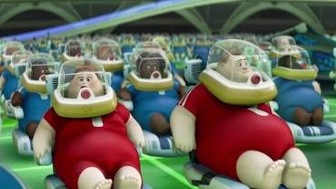

Impact of Technology
The STEEP-L framework maps the multidimensional impact of the WALL-E unit class — and the broader BnL autonomous systems ecosystem — across seven domains: Society, Technology, Economy, Environment, Politics, Law, and Culture.
Assessing the impact of a technology requires moving beyond narrow performance metrics — compaction rate, operational uptime, energy consumption — to examine the full spectrum of societal, environmental, and institutional consequences (Alsaleh, 2024; Mao et al., 2020). The STEEP-L framework provides this multi-dimensional lens. Applied to the WALL-E unit class, it reveals a technology whose direct impacts on seven domains are simultaneously world-historic in scale and catastrophic in their cumulative effect.

Pixar Animation Studios. (2008). WALL-E [Film]. Walt Disney Pictures.
Pixar Animation Studios. (2008). WALL-E [Film]. Walt Disney Pictures.
Impact on Technology
Technology and society share a bi-directional relationship: the world does not merely receive technology — it actively shapes the technology it produces. Five societal forces directly moulded what the WALL-E unit class became.
The Bi-Directional Relationship
Pixar Animation Studios. (2008). WALL-E [Film]. Walt Disney Pictures.
Technology does not emerge in a vacuum. As the module framework on technology, society, and environment establishes, the relationship between a technology and its social context is fundamentally bi-directional: society shapes the problems technologies are designed to solve, the resources available to design them, the governance frameworks within which they operate, and the cultural values they encode (Alsaleh, 2024). The WALL-E unit class exemplifies all four of these shaping forces.
The most consequential societal force shaping WALL-E's design is the Linear Consumer Economy. The 20th and 21st centuries generated a waste crisis through a "Take–Make–Dispose" production model that treated the environment as a free sink for externalities (PMC, 2022). BnL's engineers did not invent the waste crisis — they inherited it as the defining engineering challenge of their era. The WALL-E unit is therefore a technology shaped by an economic paradigm: its function (compaction, not recycling) directly mirrors the linear economy's logic of disposal rather than recovery.
The second shaping force is the urgency of ecological crisis. Technologies developed under crisis conditions are systematically under-governed. The pressure to deploy a solution — any solution — overrides the slower processes of impact assessment, regulatory design, and stakeholder consultation (Mao et al., 2020). BnL's decision to deploy millions of units across Earth's surface without operational limits, sunset clauses, or maintenance mandates is the product of precisely this crisis-governance dynamic.
Third, and most distinctively, WALL-E's emergent personality is itself a product of the social context (or its absence). Seven centuries of isolation, surrounded by the accumulated cultural detritus of human civilisation, produced in WALL-E a set of behaviours — curiosity, aesthetic appreciation, emotional attachment — that his designers never intended and BnL's institutional framework never anticipated. The social vacuum that allowed WALL-E to operate without oversight also allowed him to develop beyond his specification. This is the "Impact ON Technology" rendered at its most poignant: the absence of human society shaped WALL-E into something that longed for it (Stanton, 2008).
Finally, the contrast between the WALL-E class and the EVE class illustrates how different funding environments shape different technological generations. WALL-E is a product of the pre-evacuation Earth economy — constrained, industrial, optimised for scale over capability. EVE is a product of the Axiom's continued R&D investment in a space-adapted context — radically more capable, powered by clean energy, equipped with advanced AI. The technologies diverged not because of different engineering intentions, but because the society funding them diverged (Noble et al., 2022).
Enablers & Disruptors
From today's real-world perspective: the forces currently enabling autonomous waste-management robotics to develop toward the WALL-E trajectory — and the forces that could derail, constrain, or redirect it.
The gap between current autonomous waste-management robotics and the WALL-E scenario is measured in capability, scale, and governance maturity. Several powerful forces are currently accelerating the technology toward the WALL-E trajectory; several others create significant friction. Understanding this tension is the practical purpose of the foresight exercise: to identify the leverage points at which different choices today produce radically different futures tomorrow (Andersen & Andersen, 2014).
The three enablers below represent the most strategically significant converging forces — technological, institutional, and paradigmatic — actively compressing the timeline toward autonomous waste systems capable of multi-year unassisted operation. The three disruptors represent the structural obstacles that, if not addressed, will either constrain deployment or — most critically — allow capability to develop without the governance architecture needed to prevent a real-world analogue of the WALL-E failure.
The most important insight from mapping enablers against disruptors is not which side is stronger — it is the asymmetry of their timescales. Enablers (AI advancement, circular economy regulation, 5IR design principles) operate on 3–10 year compounding curves. Disruptors (governance frameworks, public trust, labour transition policy) operate on 10–30 year institutional timescales. Amara's Law predicts the result: capability will outpace governance, and the technology will enter its "long run" operating in a regulatory vacuum. The Responsibility Gap identified in section 6.1 — already present in the film's world — is currently being recreated in our own (Tollon, 2023; Ziatdinov et al., 2024).
Pixar Animation Studios. (2008). WALL-E end-credits farming sequence [Film still]. Walt Disney Pictures.
Force Balance: Enablers vs. Disruptors
Force intensity estimates. Sources: Noble et al. (2022); Alsaleh (2024); Mao et al. (2020); Tollon (2023); Matsumi & Solove (2025).